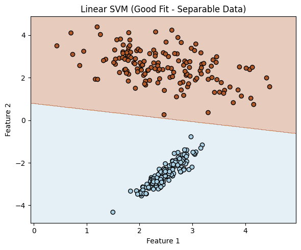
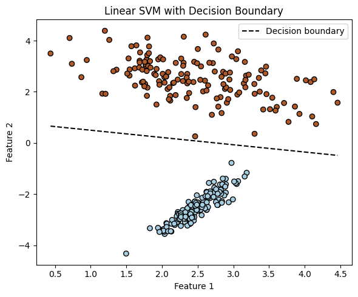
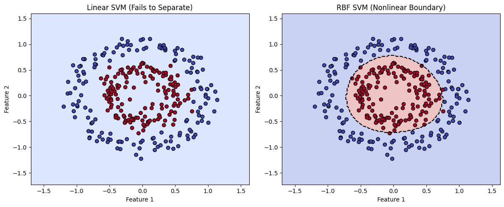
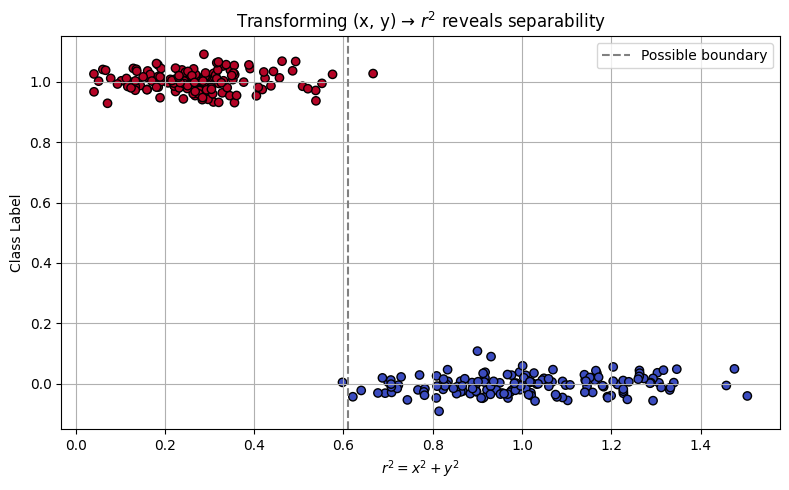
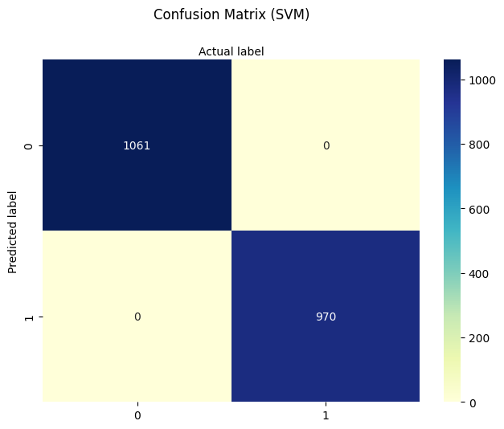
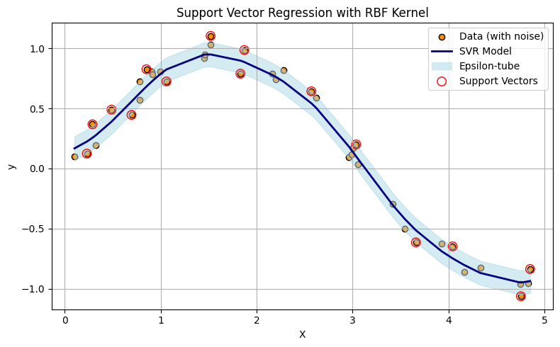
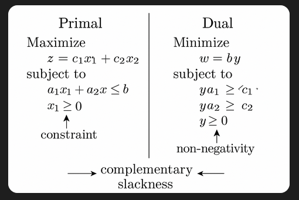

9. Support Vectors#
Course Website
Readings#
Burkov, A. (2019) The One Hundred Page Machine Learning Book See Chapter 1. pp. 5-8 pp.; Chapter 3. pp. 12-15
Asquith, W.H. “The use of support vectors from support vector machines for hydrometeorologic monitoring network analyses” Journal of Hydrology 583 (2020) This article, as well as the citations are a good starting point for implementing support vector regression (SVR) in hydrological contexts.
Vapnik, V. (1995). The Nature of Statistical Learning Theory. Springer.
Videos#
Overview#
Support Vector Machines (SVMs) are a powerful class of machine learning models designed to separate categories of data by finding the best dividing boundary. This boundary is not always a straight line—it can be a curved surface that better fits the underlying structure of the data.
In contrast to decision trees, which split data with vertical or horizontal cuts aligned to feature axes, SVMs find a hyperplane that slices through space to separate classes. What makes SVMs special is that they don’t just memorize data—they focus only on the most critical points near the dividing line. These are called support vectors, and they determine the final decision surface.
A valuable feature of SVMs is that many data points—especially those far from the decision boundary—don’t affect the model at all. These points get zero weight in the final prediction equation. This makes the model efficient and robust to noise, especially when data is well separated. The width of the “buffer zone” around the boundary is controlled by the margin and regulated by hyperparameters like C and epsilon.
Note
Support Vector Machines (SVMs) use linear combinations of specific data points (the support vectors) and attendant weights (obtained by regression) are to define a hyperplane(s) through the entire data set). Recall our decision tree chapter, in that case we split perpindicular to the various feature axes - reordered the cuts to obtain the best prediction performance, and that result is the prediction engine; SVMs are capable of mimicking curvilinear patterns in the data (essentially draw affine segments for the splits allowing our model to honor “curved” decision boundaries). SVMs only use the data points residing near the decision boundaries; values far from the bouindaries of the SVM will actually have no effect. No effect means that the weights for some data points are zero, and such observations are not required to “support” the model. Analysts have control on how large residuals can be with no effect on the SVM by a “epsilon” hyperparameter.
Overlap and Noise: Linear Non-Separable Cases#
In many real-world datasets, it’s not possible to draw a straight line (or plane) that perfectly separates the classes. We call these non-separable problems. This often happens when:
The data is noisy (e.g., errors in measurement or labeling)
The boundary between categories is curved or irregular
SVMs handle these issues in two key ways:
Soft margins: Instead of insisting on perfect separation, SVMs allow some violations (misclassifications) but penalize them in the loss function. The C parameter controls this tradeoff—low C tolerates more mistakes to get a wider margin; high C enforces stricter separation.
Kernel transformations: When even soft margins aren’t enough, we can map the data to a higher-dimensional space using a mathematical transformation called a kernel. This lets the SVM draw curved boundaries in the original feature space. A popular choice is the RBF (radial basis function) kernel, which can model highly nonlinear boundaries.
Linear Separable Example.#
In this example the two classes, are associated with two features (predictors). The SVM passes a line between the classes in feature space (very much like decision tree, but conditioned (in probability sense) on value of another feature.
import numpy as np
import matplotlib.pyplot as plt
from sklearn.datasets import make_classification
from sklearn.svm import SVC
from sklearn.model_selection import train_test_split
# Generate a linearly separable dataset ###########################
X, y = make_classification(
n_samples=300, # total points
n_features=2, # two features for easy plotting
n_informative=2, # both features contribute to classification
n_redundant=0, # no redundant features
n_clusters_per_class=1,
class_sep=2.5, # increase to make separation obvious
flip_y=0, # no label noise
random_state=42
)
####################################################################
# Split the dataset
X_train, X_test, y_train, y_test = train_test_split(X, y, test_size=0.3, random_state=0)
# Look at first few rows of training set to infer structure
print(f"{'Row':>4} {'Class':>6} {'Feature 1':>10} {'Feature 2':>10}")
for i in range(10):
print(f"{i:>4} {y_train[i]:>6} {X_train[i][0]:>10.3f} {X_train[i][1]:>10.3f}")
Row Class Feature 1 Feature 2
0 1 3.171 2.466
1 1 2.441 2.381
2 1 2.270 2.693
3 1 2.346 2.556
4 1 1.948 3.269
5 1 2.647 2.252
6 0 2.896 -1.615
7 1 1.832 3.197
8 1 2.537 2.467
9 0 2.068 -3.156
# Fit a linear SVM
clf_linear = SVC(kernel='linear', C=1.0)
clf_linear.fit(X_train, y_train);
# Function to plot decision boundary
def plot_linear_boundary(clf, title):
h = 0.02
x_min, x_max = X[:, 0].min() - 0.5, X[:, 0].max() + 0.5
y_min, y_max = X[:, 1].min() - 0.5, X[:, 1].max() + 0.5
xx, yy = np.meshgrid(np.arange(x_min, x_max, h),
np.arange(y_min, y_max, h))
Z = clf.predict(np.c_[xx.ravel(), yy.ravel()])
Z = Z.reshape(xx.shape)
plt.contourf(xx, yy, Z, alpha=0.3, cmap=plt.cm.Paired)
plt.scatter(X[:, 0], X[:, 1], c=y, cmap=plt.cm.Paired, edgecolors='k')
plt.title(title)
plt.xlabel("Feature 1")
plt.ylabel("Feature 2")
# Plot the linear boundary
plt.figure(figsize=(6, 5))
plot_linear_boundary(clf_linear, "Linear SVM (Good Fit - Separable Data)")
plt.tight_layout()
plt.show()

We can actually recover the equation of the decision boundary from a trained linear SVM model.
Note
In the 2-feature case, this boundary is a straight line, and we can visualize it directly. In general, with n features, the boundary is a hyperplane in n-dimensional space. While it’s straightforward to write its equation, it becomes difficult (or impossible) to plot in higher dimensions.
For a 2D linear SVM: $\( w_1 x_1 + w_2 x_2 + b = 0 \quad \Rightarrow \quad x_2 = -\frac{w_1}{w_2}x_1 - \frac{b}{w_2} \)$
In 3D, the equation defines a plane: $\( w_1 x_1 + w_2 x_2 + w_3 x_3 + b = 0 \)$
In 10D, the same principle applies, but we can’t visualize it directly.
Below is continuation of the example to illustrate extracting the slope and intercept, and then replot to emphasize the decision boundary.
# Assume clf_linear is a trained linear SVM (from the 2D example)
w = clf_linear.coef_[0]
b = clf_linear.intercept_[0]
slope = -w[0] / w[1]
intercept = -b / w[1]
# Display the actual boundary equation
print("Recovered Decision Boundary from Model Coefficients:")
print(f" Weight vector: w = [{w[0]:.3f}, {w[1]:.3f}]")
print(f" Intercept: b = {b:.3f}")
print(f"\nDecision boundary equation:")
print(f" x2 = ({slope:.3f}) * x1 + ({intercept:.3f})")
# Add the decision boundary to your plot
def plot_with_boundary(clf, X, y):
plt.scatter(X[:, 0], X[:, 1], c=y, cmap=plt.cm.Paired, edgecolors='k')
w = clf.coef_[0]
b = clf.intercept_[0]
x_vals = np.linspace(X[:, 0].min(), X[:, 0].max(), 100)
y_vals = -(w[0] * x_vals + b) / w[1]
plt.plot(x_vals, y_vals, 'k--', label='Decision boundary')
plt.xlabel('Feature 1')
plt.ylabel('Feature 2')
plt.title('Linear SVM with Decision Boundary')
plt.legend()
# Call this after fitting the linear SVM
plt.figure(figsize=(6, 5))
plot_with_boundary(clf_linear, X, y)
plt.tight_layout()
plt.show()
Recovered Decision Boundary from Model Coefficients:
Weight vector: w = [0.323, 1.138]
Intercept: b = -0.890
Decision boundary equation:
x2 = (-0.284) * x1 + (0.782)

Non-Separable Example.#
In this example, we examine a case where the two classes are defined by two features, but the data is not linearly separable. The class clusters are arranged in concentric circular patterns, making it impossible for a standard SVM with a linear kernel to find a straight-line boundary that divides them.
However, by using a different kernel function—specifically the radial basis function (RBF) kernel—the SVM can project the data into a higher-dimensional space where separation becomes possible. In this transformed space, the algorithm draws a separating hyperplane, which corresponds to a nonlinear decision boundary in the original feature space.
There are other ways to address non-separability, such as applying feature transformations or rotating the data. These approaches are beyond the scope of this presentation, but it’s worth noting that in our circular case, a natural transformation exists:
This effectively reduces the two features into a single radial feature. The RBF kernel essentially performs this transformation implicitly. As a self-guided exercise, you might try computing \(r^2\) manually from the original coordinates and plotting the class label versus \(r^2\). You’ll observe a clear separation in this 1D feature space—revealing the intuition behind the kernel trick.
import numpy as np
import matplotlib.pyplot as plt
from sklearn.datasets import make_circles
from sklearn.svm import SVC
from sklearn.model_selection import train_test_split
# Step 1: Generate concentric circle data (nonlinear pattern)
X, y = make_circles(n_samples=300, factor=0.5, noise=0.1, random_state=42)
# Step 2: Split into training and testing
X_train, X_test, y_train, y_test = train_test_split(X, y, test_size=0.3, random_state=0)
# Step 3: Train linear and RBF SVMs
clf_linear = SVC(kernel='linear', C=1.0)
clf_rbf = SVC(kernel='rbf', gamma='scale', C=1.0)
clf_linear.fit(X_train, y_train)
clf_rbf.fit(X_train, y_train)
# recover the linear separation line
w = clf_linear.coef_[0]
b = clf_linear.intercept_[0]
slope = -w[0] / w[1]
intercept = -b / w[1]
print("Linear SVM Model")
print("Slope :",slope)
print("Intercept :",intercept)
# Step 4: Plotting function with decision boundary
def plot_decision_boundary(clf, title, X, y):
h = 0.02
x_min, x_max = X[:, 0].min() - .5, X[:, 0].max() + .5
y_min, y_max = X[:, 1].min() - .5, X[:, 1].max() + .5
xx, yy = np.meshgrid(np.arange(x_min, x_max, h),
np.arange(y_min, y_max, h))
Z = clf.predict(np.c_[xx.ravel(), yy.ravel()])
Z = Z.reshape(xx.shape)
# Plot decision boundary and data points
plt.contourf(xx, yy, Z, alpha=0.3, cmap=plt.cm.coolwarm)
plt.contour(xx, yy, Z, levels=[0.5], colors='k', linestyles='--', linewidths=1.5) # decision boundary
plt.scatter(X[:, 0], X[:, 1], c=y, cmap=plt.cm.coolwarm, edgecolors='k')
plt.title(title)
plt.xlabel("Feature 1")
plt.ylabel("Feature 2")
# Step 5: Create side-by-side comparison plot
plt.figure(figsize=(12, 5))
plt.subplot(1, 2, 1)
plot_decision_boundary(clf_linear, "Linear SVM (Fails to Separate)", X, y)
plt.subplot(1, 2, 2)
plot_decision_boundary(clf_rbf, "RBF SVM (Nonlinear Boundary)", X, y)
plt.tight_layout()
plt.show()
Linear SVM Model
Slope : 0.3008066025908663
Intercept : 2533.0677132863866

import numpy as np
import matplotlib.pyplot as plt
from sklearn.datasets import make_circles
# Step 1: Generate nonlinear, concentric data
X, y = make_circles(n_samples=300, factor=0.5, noise=0.1, random_state=42)
# Step 2: Compute r^2 for each point (distance from origin squared)
r_squared = np.sum(X**2, axis=1) # x^2 + y^2
# Step 3: Scatter plot: r^2 vs class label
plt.figure(figsize=(8, 5))
plt.scatter(r_squared, y + np.random.normal(0, 0.03, size=len(y)), c=y, cmap='coolwarm', edgecolors='k')
plt.axvline(x=np.median(r_squared), color='gray', linestyle='--', label='Possible boundary')
plt.xlabel(r"$r^2 = x^2 + y^2$")
plt.ylabel("Class Label")
plt.title("Transforming (x, y) → $r^2$ reveals separability")
plt.legend()
plt.grid(True)
plt.tight_layout()
plt.show()

Common SVM Kernels in scikit-learn#
Kernel |
Description |
Handles Nonlinear Data? |
Tunable Parameters |
Best Used When… |
|---|---|---|---|---|
linear |
Computes a straight-line (or flat hyperplane) separator |
❌ No |
C |
Classes are well-separated or data is high-dimensional (e.g., text classification) |
rbf |
Radial Basis Function (Gaussian); maps to infinite dim. |
✅ Yes |
C, gamma |
Boundary is curved or complex; most common general-purpose kernel |
poly |
Polynomial kernel of degree d |
✅ Yes |
C, degree, coef0, gamma |
Patterns follow curved but structured relationships (e.g., quadratic) |
sigmoid |
Simulates behavior of a shallow neural network |
✅ Yes (limited) |
C, coef0, gamma |
Rarely used; useful in niche applications resembling neural threshold behavior |
precomputed |
You supply the full kernel matrix instead of raw features |
⚠️ Depends |
None (kernel = your matrix) |
Custom kernels for specialized data types (e.g., graphs, biological sequences) |
Tip
C controls regularization: low C allows more misclassifications (smoother boundary); high C fits tightly.
gamma controls how far a single training example affects the decision boundary:
High gamma: model is sensitive to individual points (can overfit)
Low gamma: smoother, more general boundary
You can experiment with kernel types using SVC(kernel=’linear’), kernel=’rbf’, etc.
9.1 Poison Mushroom Example using SVM#
The script below uses SVMs to classify our poison mushroom example;
Why the Mushroom Dataset Works for SVM:
All categorical features → numerically encoded; You’ve already ordinal-encoded the dataset, making it compatible with sklearn.svm.SVC, which requires numeric input.
Binary classification problem. SVMs excel in this setting, especially with nonlinear kernels like RBF.
Relatively small feature set. Ideal to visualize and reason about decision boundaries (even if not plotted in high dimensions).
Note
In this script I left artifacts to try the other kernels if you wish. The sigmodial kernel has really long run times, and can stall the machine. The specs left do run, but it is a poor performer. The other kernels evaluate reasonably quickly. The artifacts capture functioning syntax, which is the goal.
# SVM-Based Mushroom Classification (Refactored Version)
# Author: Sensei + OpenAI Refactor
import pandas as pd
import numpy as np
import matplotlib.pyplot as plt
import seaborn as sns
import warnings
warnings.filterwarnings("ignore")
from sklearn.model_selection import train_test_split
from sklearn.svm import SVC
from sklearn import metrics
# -------------------------------------------
# Step 1: Load and Prepare the Data
# -------------------------------------------
# Download the mushroom dataset from remote source
import requests
remote_url = "http://54.243.252.9/ce-5319-webroot/ce5319jb/lessons/logisticregression/agaricus-lepiota.data"
rget = requests.get(remote_url, allow_redirects=True)
with open('poisonmushroom.csv', 'wb') as localfile:
localfile.write(rget.content)
# Define encodings for ordinal representation
encodings = {
'poison-class': (['e', 'p'], 0),
'cap-shape': (['b','c','x','f','k','s'], 1),
'cap-surface': (['f','g','y','s'], 1),
'cap-color': (['n','b','c','g','r','p','u','e','w','y'], 1),
'bruises': (['f','t'], 1),
'odor': (['a','l','c','y','f','m','n','p','s'], 1),
'gill-attachment': (['a','d','f','n'], 1),
'gill-spacing': (['c','w','d'], 1),
'gill-size': (['b','n'], 1),
'gill-color': (['k','n','b','h','g','r','o','p','u','e','w','y'], 1),
'stalk-shape': (['e','t'], 1),
'stalk-root': (['b','c','u','e','z','r','?'], 1),
'stalk-surface-above-ring':(['f','y','k','s','?'], 1),
'stalk-surface-below-ring':(['f','y','k','s','?'], 1),
'stalk-color-above-ring': (['n','b','c','g','o','p','e','w','y'], 1),
'stalk-color-below-ring': (['n','b','c','g','o','p','e','w','y'], 1),
'veil-type': (['p','u'], 1),
'veil-color': (['n','o','w','y'], 1),
'ring-number': (['n','o','t'], 1),
'ring-type': (['c','e','f','l','n','p','s','z'], 1),
'spore-print-color': (['k','n','b','h','r','o','u','w','y','?'], 1),
'population': (['a','c','n','s','v','y','?'], 1),
'habitat': (['g','l','m','p','u','w','d'], 1)
}
# Load data
mymushroom = pd.read_csv('poisonmushroom.csv', header=None)
mymushroom.columns = list(encodings.keys())
# Encoding helper function
def make_encoder(alphabet, offset=1, name='feature'):
def encoder(val):
if val in alphabet:
return alphabet.index(val) + offset
raise Exception(f"Encoding failed in '{name}': unknown value '{val}'")
return encoder
# Apply encodings to dataframe
def apply_encodings(df, encodings):
encoded_df = pd.DataFrame(index=df.index)
for col, (alphabet, offset) in encodings.items():
encoder = make_encoder(alphabet, offset, col)
encoded_df[col] = df[col].apply(encoder)
return encoded_df
interim = apply_encodings(mymushroom.copy(), encodings)
# -------------------------------------------
# Step 2: Split Data for Training/Testing
# -------------------------------------------
feature_cols = interim.columns[1:] # all but target
X = interim[feature_cols]
y = interim['poison-class']
X_train, X_test, y_train, y_test = train_test_split(X, y, test_size=0.25, random_state=0)
# -------------------------------------------
# Step 3: Train SVM Classifier
# -------------------------------------------
#svm = SVC(kernel='linear', C=1.0, gamma='scale', probability=True) # this kernel OK with these settings
svm = SVC(kernel='rbf', C=1.0, gamma='scale', probability=True)
#svm = SVC(kernel='sigmoid', coef0=0.9, C=1.0, gamma='scale', probability=True) # this kernel performs poorly this dataset
#svm = SVC(kernel='poly', degree=3, C=1.0, gamma='scale', probability=True) # this kernel works nicely with these settings
svm.fit(X_train, y_train)
y_pred = svm.predict(X_test)
# -------------------------------------------
# Step 4: Evaluate Performance
# -------------------------------------------
print("Support Vector Machine Classifier")
print("Training Accuracy:", svm.score(X_train, y_train))
print("Test Accuracy:", svm.score(X_test, y_test))
cnf_matrix = metrics.confusion_matrix(y_test, y_pred)
class_names = [0, 1]
fig, ax = plt.subplots()
tick_marks = np.arange(len(class_names))
plt.xticks(tick_marks, class_names)
plt.yticks(tick_marks, class_names)
sns.heatmap(pd.DataFrame(cnf_matrix), annot=True, cmap="YlGnBu", fmt='g')
ax.xaxis.set_label_position("top")
plt.tight_layout()
plt.title('Confusion Matrix (SVM)', y=1.1)
plt.ylabel('Predicted label')
plt.xlabel('Actual label')
# -------------------------------------------
# Step 5: Classify New Mushroom
# -------------------------------------------
s_new = "csgfnfwbktrssggpwoeksu" # new sample string
feature_names = list(encodings.keys())[1:] # skip poison-class
encoders = {key: make_encoder(alphabet, offset, key) for key, (alphabet, offset) in encodings.items() if key != 'poison-class'}
try:
x_new = [encoders[col](char) for col, char in zip(feature_names, s_new)]
y_new = svm.predict(np.array(x_new).reshape(1, -1))
if y_new[0] == 0:
print("\033[92mNew mushroom classified as EDIBLE\033[0m")
else:
print("\033[91mNew mushroom classified as POISONOUS\033[0m")
except Exception as e:
print("Error encoding new sample:", e)
Support Vector Machine Classifier
Training Accuracy: 1.0
Test Accuracy: 1.0
New mushroom classified as EDIBLE

9.2 Support Vector Regression#
A variant of SVM known as Support Vector Regression (SVR) is available for continuous prediction tasks. It uses the same ideas of kernels and margin optimization, but adapts them for fitting real-valued functions.
Key Points on Support Vector Regression (SVR)
Implemented in scikit-learn as sklearn.svm.SVR
Instead of finding a classification boundary, SVR finds a function that stays within a margin (epsilon) of the true targets
It minimizes prediction error only when it exceeds a threshold, creating a “tube” of tolerance around the prediction
It uses the same kernel machinery: kernel=’linear’, ‘rbf’, ‘poly’, etc.
Comparison of Classifers and Regressors in SVMs Context
Classifier (SVC) |
Regressor (SVR) |
|---|---|
Maximizes the margin between classes |
Fits a flat function with an epsilon-insensitive zone |
Optimizes hinge loss (for misclassification) |
Optimizes epsilon-insensitive loss |
Good for hard boundary decisions |
Good for smooth function approximation |
The script below illustrates the concepts with a simple synthetic 1D dataset.
import numpy as np
import matplotlib.pyplot as plt
from sklearn.svm import SVR
# Step 1: Generate synthetic 1D data
np.random.seed(42)
X = np.sort(5 * np.random.rand(40, 1), axis=0) # 40 values in [0, 5]
y = np.sin(X).ravel() + np.random.normal(0, 0.1, X.shape[0]) # y = sin(x) + noise
# Step 2: Fit Support Vector Regression with RBF kernel
svr_rbf = SVR(kernel='rbf', C=100, gamma=0.5, epsilon=0.1)
svr_rbf.fit(X, y)
y_pred = svr_rbf.predict(X)
# Step 3: Plot results
plt.figure(figsize=(8, 5))
plt.scatter(X, y, color='darkorange', label='Data (with noise)', edgecolors='k')
plt.plot(X, y_pred, color='navy', lw=2, label='SVR Model')
plt.fill_between(X.ravel(),
y_pred - svr_rbf.epsilon,
y_pred + svr_rbf.epsilon,
color='lightblue', alpha=0.5,
label='Epsilon-tube')
# Highlight support vectors
plt.scatter(X[svr_rbf.support_], y[svr_rbf.support_],
facecolors='none', edgecolors='red', label='Support Vectors', s=80)
plt.title("Support Vector Regression with RBF Kernel")
plt.xlabel("X")
plt.ylabel("y")
plt.legend()
plt.grid(True)
plt.tight_layout()
plt.show()

Support Vector Regression (SVR) fits a function—often nonlinear depending on the kernel—such that most data points lie within a tube of radius \(\epsilon\) around the regression surface. The upper and lower boundaries of this tube are affine offsets from the central predictor. Unlike ordinary regression, SVR uses a loss function that ignores small errors within the tube and only penalizes deviations beyond \(\epsilon\). This leads to a model that is insensitive (by design) to minor fluctuations or noise.
Note
In the plot above, only the data points (treated as vectors in 1D) that define the tightest upper and lower envelope of the prediction tube are used to shape the model. These are the support vectors, shown as larger circles. If you were to connect these points with line segments—upper hull to upper hull, and lower hull to lower hull—you would construct a piecewise-linear tube enclosing the dataset. While the actual SVR surface may be curved (due to kernel transformations), this geometric interpretation helps illustrate how SVR forms a minimal-area envelope constrained by the allowable error margin \(\epsilon\).
Operationally SVR:#
Generates a function \(f(x)\) that minimizes:
The lower support boundary is:
The upper support boundary is:
Minimization Techniques Used in SVR (and SVM)
Sequential Minimal Optimization (SMO)
Primary method in LIBSVM (used by sklearn.svm.SVR)
Breaks the large quadratic programming (QP) problem into smaller sub-problems
Solves two Lagrange multipliers at a time while maintaining constraints
Quadratic Programming (QP)
The SVR formulation itself is a convex QP problem with inequality constraints
Solves:
\( min\frac{1}{2}∥w∥^2+C\sum(ξ_i+ξ_i^∗)~\text{subject to:}~y_i−f(x_i)≤ϵ+ξ_i\)
Internally simplified via primal/dual formulation
Kernel Tricks via Dual Optimization
SVR solves the dual of the primal QP, allowing efficient use of kernel functions
Makes optimization feasible even in very high-dimensional transformed spaces
Tip
Try searching for “simple illustration of primal-dual linear program” to find visual explanations of how primal and dual formulations relate. These illustrations often make it easier to grasp abstract optimization concepts like duality and complementary slackness.

While linear programs guarantee complementary slackness at optimality, quadratic programs (like those used in support vector machines and support vector regression) may not always satisfy it due to curvature in the objective. Still, the core idea of balancing constraints and optimization objectives remains the same.